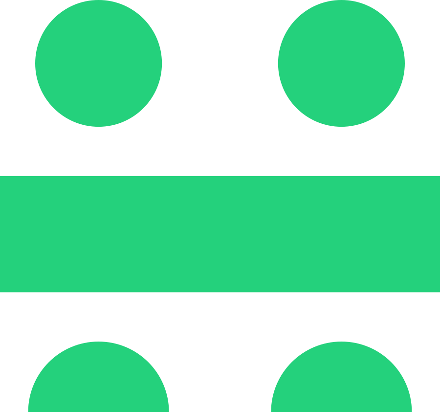
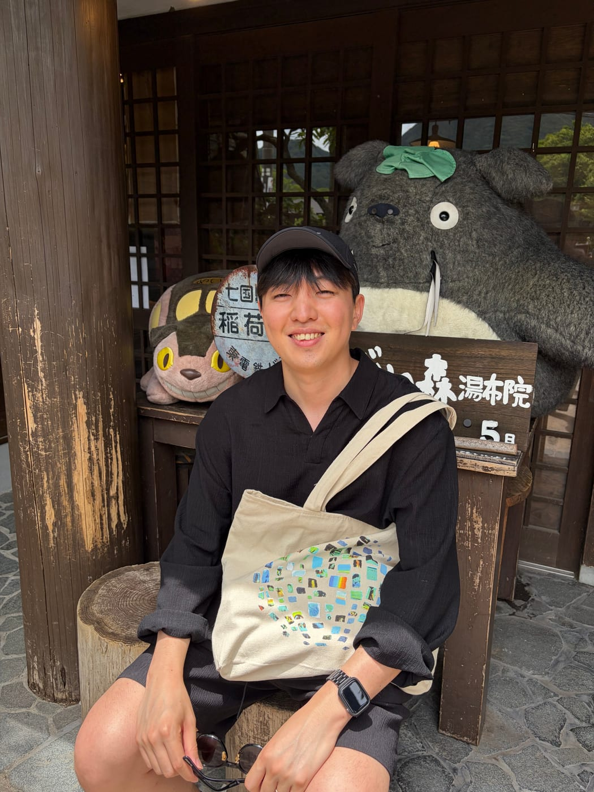

Holiday Robotics
Senior Member of Technical Staff
–Present
Founding member, Embodied AI Team.
Robot-use agents and synthetic data generation.

PhD — KAIST AI
BS — KAIST Mathematical Science
Minor: Intellectual Property
I am a Senior Member of Technical Staff at Holiday Robotics. My research focuses on efficient LLM inference and adaptive reasoning: how models allocate computation, generate answers, and learn when to reason.
My work spans adaptive thinking, instruction-guided decoding, and parallel and speculative decoding. At Holiday Robotics, I am extending this research to embodied agents that use robot skills and improve through execution feedback.
I received my Ph.D. in AI from KAIST (카이스트), advised by Prof. Se-Young Yun in the OSI Lab. Previously, I worked at LG AI Research and interned at Google Research, Dynamo AI, and Qualcomm AI.
I love coffee, running, and long walks at Seoul Forest, and I enjoy the Seongsu neighborhood culture. 커피를 좋아하고, 러닝과 서울숲 산책을 즐기며 성수동 문화를 좋아합니다.
Contact: kimtaehyeon610 [at] gmail [dot] com
I study how models reason effectively with less computation, and am extending this work to agents that act in the physical world. 더 적은 연산으로 효과적으로 추론하는 방법을 연구하며, 이를 실제 환경에서 행동하는 에이전트로 확장하고 있습니다.
Learning when to reason and accelerating answer generation through adaptive thinking, parallel decoding, and speculative decoding.
Using reinforcement learning, evaluation, and adaptive training data to improve reasoning quality and computational efficiency.
At Holiday Robotics, I work on agents that select and compose robot skills. My focus includes evaluation, synthetic robot trajectories, and automatic labeling of real-world data to support policy improvement.
Contrastive Thinking Decoding: Steering Answer Generation in Reasoning Models
First author · Steering answer generation in reasoning models.
First author · Adaptive thinking through root-token policy optimization.
Multi-Drafter Speculative Decoding with Alignment Feedback
Co-first author · Speculative decoding with multiple drafters and alignment feedback.
Co-first author · Instruction-guided decoding for noisy instructions.
Accelerating Blockwise Parallel Language Models with Draft Refinement
First author · Google Research collaboration on draft refinement for faster parallel decoding.
Comparing Kullback-Leibler Divergence and Mean Squared Error Loss in Knowledge Distillation
Co-first author · Comparing KL and MSE objectives for knowledge distillation.
MERIT Feedback Elicits Better Bargaining in LLM Negotiators
AdaSTaR: Adaptive Data Sampling for Training Self-Taught Reasoners
Guiding Reasoning in Small Language Models with LLM Assistance
C2: Scalable Auto-Feedback for LLM-based Chart Generation
A Unified Framework for Speculative Decoding with Multiple Drafters as a Bandit
Block Transformer: Global-to-Local Language Modeling for Fast Inference
FLR: Label-Mixture Regularization for Federated Learning with Noisy Labels
Towards Fast Multilingual LLM Inference: Speculative Decoding and Specialized Drafters
Exploring and Improving Drafts in Blockwise Parallel Decoding
Leveraging Normalization Layer in Adapters with Progressive Learning and Adaptive Distillation for Cross-Domain Few-Shot Learning
Navigating Data Heterogeneity in Federated Learning: A Semi-Supervised Federated Object Detection
Weather4cast at NeurIPS 2022: Super-Resolution Rain Movie Prediction under Spatio-temporal Shifts
Region-Conditioned Orthogonal 3D U-Net for Weather4Cast Competition
Layover Intermediate Layer for Multi-Label Classification in Efficient Transfer Learning
Revisiting the Activation Function for Federated Image Classification
Supernet Training for Federated Image Classification under System Heterogeneity
Revisiting Architecture-aware Knowledge Distillation: Smaller Models and Faster Search
Revisiting Orthogonality Regularization: A Study for Convolutional Neural Networks in Image Classification
FINE Samples for Learning with Noisy Labels
Adaptive Local Bayesian Optimization Over Multiple Discrete Variables
Efficient Model for Image Classification With Regularization Tricks
† corresponding authors; * equal contribution.

Senior Member of Technical Staff
–Present
Founding member, Embodied AI Team.
Robot-use agents and synthetic data generation.
Superintelligence Lab
–
Tech Lead (Jan.–Jun. 2026)
Squad Lead (Sep.–Dec. 2025)
Research Scientist (Apr.–Aug. 2025)
RL, efficient and effective LLM inference, search agents, and adaptive reasoning.
Worked w/ Moontae Lee.
Ph.D. Research Intern
–
Efficient LLM inference.
Worked with Adrian Benton and Ananda Theertha Suresh.
Ph.D. Research Intern
–
Privacy-preserving federated learning; worked with Eric Lin.
Ph.D. Research Intern
–
Worked with Heesoo Myeong on efficient models for autonomous driving.